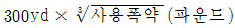
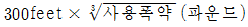
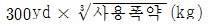
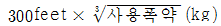

잠수기능사 (2015-07-19 기출문제)
1과목: 잠수물리
1. 기체용적의 변화가 가장 크게 일어나는 수심은?
- 수면에서 10 m 사이
- 10 m에서 20 m 사이
- 30 m에서 40 m 사이
- 40 m에서 50 m 사이
(정답률: 86%)

2. 공기 중 질소의 비율은 약 얼마나 되는가?
- 18%
- 21%
- 50%
- 79%
(정답률: 88%)
3. 다음 중 부력과 가장 관계가 깊은 법칙은?
- 헨리 법칙
- 달톤 법칙
- 아르키메데스 원리
- 보일 법칙
(정답률: 67%)
4. 높은 고지대의 호수나 저수지에서 잠수할 때, 감압시간을 결정하는데 가장 많은 영향을 주는 요인으로 적합한 것은?
- 기압
- 수온
- 물의 밀도
- 중량벨트
(정답률: 88%)
5. 물의 열전도율은 공기보다 약 몇 배나 더 큰가?
- 약 10배
- 약 25배
- 약 45배
- 약 60배
(정답률: 84%)
6. 잠수 시 발생하는 압착(squeeze)과 기체색전증(gas embolism)이 관계되는 기체의 법칙은?
- 게이뤼삭의 법칙
- 헨리의 법칙
- 달톤의 법칙
- 보일의 법칙
(정답률: 70%)
7. 절대압력으로 4기압에 해당되는 수심은?(오류 신고가 접수된 문제입니다. 반드시 정답과 해설을 확인하시기 바랍니다.)
- 33 feet (10 m)
- 66 feet (20 m)
- 99 feet (30 m)
- 132 feet (40 m)
(정답률: 88%)
8. 육상보다 수중에서는 소리의 전달속도가 약 몇 배 정도 빠른가?
- 2배
- 4배
- 6배
- 8배
(정답률: 90%)
9. 일정한 온도 하에서 액체 속에 녹아들어 가는 기체의 양은 그 기체의 무엇과 비례하는가?
- 원자량
- 부피
- 부분압
- 밀도
(정답률: 67%)
10. 육상에서 1 L 부피를 지닌 고무풍선을 수심 20 m의 바다 속으로 가져가면 고무풍선의 부피는 몇 L로 되는가?
- 0.33 L
- 0.5 L
- 2 L
- 3 L
(정답률: 78%)
11. 챔버 내에 비치할 소화도구로 가장 적절한 것은?
- 사염화탄소
- 탄산가스
- 물과 모래
- 분말소화기
(정답률: 81%)
12. 다음 중 경한 감압병 증상에 해당되지 않는 증상은?(오류 신고가 접수된 문제입니다. 반드시 정답과 해설을 확인하시기 바랍니다.)
- 질식
- 마비
- 부종
- 피부발진
(정답률: 52%)
13. 잠수병 발생시 챔버(CHAMBER)에서 재압을 하는 것은 인체조직에 발생된 무엇을 해소하기 위함인가?
- 통증
- 가려움
- 기포
- 부종
(정답률: 88%)
14. 하잠하는 동안 눈 위 이마 부분에 바늘로 찌르는 듯한 통증의 증세는?
- 유스타키안과 압착
- 물안경 압착
- 사이너스(부비동) 압착
- 케이슨 병
(정답률: 83%)
15. 감압병을 일으킬 확률이 가장 적은 것은?
- 분당 18 m(60 ft) 보다 빨리 상승할 때
- 감압정지를 못 했을 때
- 잠수 후 곧바로 높은 지대로 갔을 때
- 비행기에서 내리자마자 잠수 할 때
(정답률: 80%)
2과목: 잠수위생
16. 미해군 잠수표에서 반복그룹 A 의 질소 장력은 몇 fswa 인가?
- 26.07 ~ 27.65
- 27.1 ~ 29.1
- 28.1 ~ 30.1
- 29.1 ~ 31.1
(정답률: 47%)
17. 폐 파열로 인한 기체색전증의 확실한 증상은?
- 복부의 통증
- 관절의 통증
- 입가의 피거품
- 부종
(정답률: 78%)
18. 스쿠버 잠수시 잠수사가 안전줄을 사용하지 않아도 되는 상황은?
- 동굴잠수
- 야간잠수
- 얼음 밑 잠수
- 난파선 내부조사
(정답률: 76%)
19. 질소 마취 증상과 가장 거리가 먼 것은?
- 몸이 나른해지고 정신이 흐려진다.
- 술에 취한 것과 비슷해진다.
- 기분이 좋아지기도 하고 엉뚱한 행동을 한다.
- 시야가 좁아진다.
(정답률: 83%)
20. 표면 감압시 가장 바람직한 호흡매체는?
- 산소
- 질소
- 수소
- 이산화탄소
(정답률: 83%)
21. 제1형 감압병 증상 중 가장 많은 것은?
- 따끔거리는 피부통증이나 가려움증
- 팔관절, 다리관절의 통증
- 어지러움증
- 감각마비
(정답률: 77%)
22. 질소마취로부터 벗어나기 위한 행동과 관계가 가장 먼 것은?
- 얕은 곳으로 올라온다.
- 물 밖으로 나온다.
- 호흡을 계속하여 상승한다.
- 심호흡을 한다.
(정답률: 71%)
23. 비감압 한계시간표 설명 중 맞는 것은?
- 감압정지를 하지 않아도 되는 최대 해저체류시간표
- 감압정지가 필요 없는 잠수 회수의 표
- 감압정지가 필요 없는 잠수 후 휴식한계표
- 질소 마취에 거리지 않는 최대 허용 시간표
(정답률: 79%)
24. 다음에 열거한 산소 중독의 초기 증상 중 발작을 예고하는 가장 중요한 증상은?
- 시야가 좁아지는 시야협착 증세
- 메스꺼움이나 구역질
- 얼굴부위 근육의 떨림
- 안절부절하는 증상과 현기증
(정답률: 75%)
25. 잠수를 마치고 수면으로 복귀한 잠수사가 두통과 어지러움을 호수하였다. 이 잠수사의 입술과 손톱 아래의 색깔이 유난히 붉은 특징이 있었다고 할 때 가장 가능성이 높은 건강장애는?
- 산소 부족증
- 산소 독성
- 일산화탄소 중독
- 탄산사그 과다증
(정답률: 80%)
26. 표면공급식 잠수에서 사용되는 생명줄의 구성요소 중 수심측정호스의 내경은 얼마인가?
- 6.4 mm
- 8.5 mm
- 1/2 inch
- 3/8 inch
(정답률: 48%)
27. KMB 밴드마스크의 요구형 호흡조절기에 공기가 유통되지 않는다면 그 원인과 가장 거리가 먼 것은?
- 기체공급의 차단
- 기체공급의 통로가 막힘
- 기체공급의 과중한 압력
- 호흡조절기의 작동 불능
(정답률: 73%)
28. 스쿠버 잠수시 사용되는 호흡조절기를 공기통에 연결하여 사용하는 일반적인 방법으로 옳은 것은? (단, 옥토퍼스는 제외한다.)
- 착용시 잔압계가 있는 쪽으로 같이 연결하여 사용한다.
- 제1단계의 고압구멍(H.P)에 연결하여 사용한다.
- 착용시 잠수사의 오른쪽으로 연결하여 사용한다.
- 제2단계의 왼쪽 고압공(H.P)에 연결하여 사용한다.
(정답률: 72%)
29. 기체압축기나 펌프를 운전하기 전에 가장 먼저 검사하여야 할 것은?
- 윤활유 계통
- 드레인 계통
- 냉각수 계통
- 연료 계통
(정답률: 84%)
30. 수심 40 m에서 수퍼라이트 헬멋으로 2명의 잠수사가 잠수작업을 한다고 가정할 때 분당 적정 공기공급량으로 가장 적합한 것은?
- 80 L 이상
- 100 L 이상
- 200 L 이상
- 400 L 이상
(정답률: 67%)
3과목: 잠수장비
31. 스쿠버용 공기통의 압력이 3000 P.S.I는 몇 kg/cm2인가?
- 160.6 kg/cm2
- 190 kg/cm2
- 210 kg/cm2
- 230 kg/cm2
(정답률: 76%)
32. 잠수에 사용되는 고무제품은 잠수 후 어떻게 보관하는가?
- 직사광선에 말린다.
- 청수로 씻어 더운 곳에서 말린다.
- 청수로 씻고 파우더(powder)을 칠해 서늘한 곳에 보관한다.
- 종류별로 분류하여 쌓아 보관한다.
(정답률: 93%)
33. 국내에서 규정하는 고압 기체저장통은 1차 재검사 후 2차 재검사는 몇 년 후 수압검사를 실시하는가?
- 1년
- 2년
- 3년
- 5년
(정답률: 58%)
34. 다음 중 기체압축기 등에서 엔진오일의 양이 부족하면 어떤 현상이 나타나는가?
- 출력이 증대된다.
- 연소작용이 안된다.
- 기관 내부가 마모된다.
- 엔진이 과속 회전한다.
(정답률: 83%)
35. 다음 수심측정호스에 대해 틀린 것은?
- 내경 1/4 인치이다.
- 외경 3/8 인치이다.
- 제작일로부터 5년 경과 후 매년 압력시험한다.
- 약 150 psig로 압축했을 때 압력감소 없이 1분간 유지해야 한다.
(정답률: 44%)
36. 동력전달장치의 엔진에 윤활유를 보충 시 적정량보다 과다하면 발생할 수 있는 1차적인 요인은?
- 공기가 오염된다.
- 기관의 회전속도가 빨라진다.
- 기관의 회전속도가 늦어진다.
- 연소실에 윤활유가 올라와 연소된다.
(정답률: 79%)
37. KMB 밴드 마스크에 대한 설명 중 틀린 것은?
- KMB 18A/B 밴드마스크의 본체는 유리섬유(Fiberglass) 재질이다.
- KMB 28 밴드마스크의 본체는 제노이(Xenoy)와 폴리카보나이트 혼합의 비전도체 재질이다.
- 마스크 내부의 초과압력을 상쇄하기 위해 머리덮개 상부에 6mm 정도의 구멍이 뚫려있다.
- KMB-10 밴드마스크의 공기는 Whisker를 통해서 배출된다.
(정답률: 54%)
38. 다음 중 생명줄(Umbilical)과 관련된 내용이 아닌 것은?
- 잠수사에게 공구 및 장비를 내려주는데 사용한다.
- 기체 공급호스에 미치는 장력을 감소시켜준다.
- 잠수사의 상승과 하잠을 유도한다.
- 잠수사의 통신을 하도록 해준다.
(정답률: 78%)
39. 스쿠버 잠수시 예비공기를 사용하기 시작하면 가장 우선적으로 취해야 할 행동으로 가장 적합한 것은?
- 즉시 상승한다.
- 감독관의 지시를 받는다.
- 하던 일을 다 끝내고 상승한다.
- 수심에 따라 잠수사 스스로 판단한다.
(정답률: 79%)
40. 혼합기체(Mixe Gas) 잠수와 관련이 없는 것은?
- 헬륨은 대량생산 시 화학적인 방법을 통해 인공적으로 제조, 생산된다.
- 헬륨 등의 불활성기체와 산소를 혼합한 것이다.
- 공기잠수에서 오는 질소마취를 배제할 수 있다.
- 공기잠수 시 보다 더 깊이 잠수할 수 있다.
(정답률: 65%)
41. 수중용접작업 중 전선의 불량으로 인해 인체에 흐르는 전류가 잠수사의 근육수축을 유발하고 지배력을 상실케 하는 전류량으로 가자 적절한 것은?
- 1 mA 이내
- 2 ~ 5 mA
- 5 ~ 10 mA
- 10 ~ 20 mA
(정답률: 55%)
42. 다음 중 초고온 절단봉을 구성하고 있는 특수합금봉에 대한 설명 중 맞는 것은?
- 산소 공급을 원활하게 한다.
- 산소 공급 시 독자적인 연소와 아크를 발생한다.
- 아크를 발생하며 전원 차단 시 아크는 꺼진다.
- 전원공급을 수월하게 한다.
(정답률: 63%)
43. 수심 40 m에서 잠수 작업 시 호흡 여과기 표준 공기순도의 한계를 벗어나는 기체는?
- 산소 : 20% ~ 22%
- 탄화수소 : 최대 35 ppm
- 일산화탄소 : 최대 20 ppm
- 이산화탄소 : 최대 1000 ppm
(정답률: 53%)
44. 물막이 공사를 원활히 수행하기 위한 필수 검토 사항에 포함되지 않는 것은?
- 위치 선정
- 단면 선정
- 기자재 확보
- 일정 및 시공계획 수립
(정답률: 62%)
45. 전극봉이 모두 소모되어 교환할 시에 제일 먼저 취할 행동은?
- 전류 중단 신호를 보낸다.
- 토치를 절단 위치에서 뗀다.
- 전극봉을 빼낸다.
- 상승한다.
(정답률: 77%)
4과목: 잠수작업
46. 줄신호의 특수신호 중 2-1-2의 의미는?
- 긴 줄을 보내라.
- 기록판을 보내라.
- 공기 공급을 늘려라.
- 나는 엉켰다. 그러나 혼자 풀 수 있다.
(정답률: 65%)
47. 전기뇌관 발파 시 준수해야 할 안전수칙과 가장 거리가 먼 것은?
- 발파회로 내에 제조회사가 다른 전기뇌관을 사용해서는 안된다.
- 정전기가 일어나는 곳에서는 발파를 해서는 안된다.
- 뇌우가 일어나는 곳에서 발파를 해서는 안된다.
- 뇌관과 폭약은 안전한 장소에서 같이 보관한다.
(정답률: 87%)
48. 도화선이나 도폭선을 사용한 발파시 최소안전대피거리의 산출식은?




(정답률: 71%)
49. 와이어 클립 체결시 클립간 간격 공식은?
- D × 4
- D × 5
- D × 6
- D × 7
(정답률: 56%)
50. 직경 8인치 파이프 또는 각봉을 폭약으로 절단할 시 가장 효과가 높은 장전 방법은?
- 정중안 장전
- 양쪽 장전
- 지환식 장전
- 계단식 장전
(정답률: 69%)
51. 수중 용접 및 절단에 대한 설명 중 틀린 것은?
- 절단 토오치는 산소 누설이 없어야 한다.
- 수중용접 홀더는 전도체로 되어 있다.
- 수중용접 전선의 연결점은 완전히 절연해야 한다.
- 수중절단의 전극 홀더는 절연체로 되어 있다.
(정답률: 58%)
52. 다음 나일론 로프에 관한 설명 줄 잘못된 것은?
- 흡습성이 크고, 내후성이 적다.
- 유류에 접촉되어도 강도 저하가 없다.
- 가벼우면서도 내구성이 강하다.
- 신장률이 크고, 내마모성이 약하다.
(정답률: 45%)
53. 잠수사가 수중 작업 중 사용하는 비상신호인 “나를 즉시 상승시켜라”의 줄신호는?
- 1-1-1
- 2-2-2
- 3-3-3
- 4-4-4
(정답률: 78%)
54. 다음 중 수중촬영의 피사계 심도에 영향을 미치지 않는 것은?
- UV 필터
- f/stop 값
- 파사체와의 촬영거리
- 초점거리가 다른 렌즈의 사용
(정답률: 73%)
55. 와이어로프가 꺾이게 되면 파단력이 몇 % 감소되어 국부적인 마모를 유발하여 강도가 약해지는가?
- 20%
- 30%
- 50%
- 60%
(정답률: 63%)
56. 용접에 사용되는 비파괴검사 중 수중에서 사용 불가한 검사법은?
- 방사선 투과검사
- 자기탐상검사
- 초음파 투과법
- 침투탐상검사
(정답률: 57%)
57. 침몰선에 설치하는 코퍼댐(Cofferdam, 방축)의 사용이 가능한 최고 수심은?
- 40 피트
- 50 피트
- 60 피트
- 70 피트
(정답률: 46%)
58. 법으로 규정한 잠수사의 1일 최대근로시간은?
- 4시간
- 6시간
- 8시간
- 수심에 따라 다르다.
(정답률: 89%)
59. 다음 중 가장 어렵고 까다로운 구조는?
- 인명구조
- 항만구조
- 연안구조
- 재난구조
(정답률: 61%)
60. 정극성으로 결선할 때 수중용접에서 모재에 공급되는 전극은?
- 양극(+)
- 음극(-)
- AC전원
- 양극과 음극의 교차
(정답률: 72%)